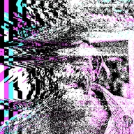

Omino Diffusion+

レイヤーを少ない色数で描き直し、丸め誤差を一定方向へ流すことで、動かすと生き生きとしたグリッチなディザ表現になります。
設定
| 設定項目 | 種類 | 範囲 | デフォルト |
|---|---|---|---|
| 角度 | 角度 | 0°〜3600° | 0° |
| 強さ | 数値 | 0.01〜1 | 1 |
| ステップ | 数値 | 1〜200 | 35 |
| 誤差の重み | 数値 | 0〜10 | 0.75 |
| 重みの減衰 | 数値 | 0%〜100% | 0% |
| パレット | 選択 | 白黒、RGBポスタライズ（2階調）、RGBポスタライズ（3階調）、RGBポスタライズ（4階調）、グレー（3階調）、グレー（4階調）、CGA 緑/赤/黄、CGA シアン/マゼンタ/白、CGA 青/シアン/マゼンタ/白、彩度＋ポスタライズ、カスタム2色、カスタム3色、カスタム4色、カスタム5色、カスタム6色 | RGBポスタライズ（3階調） |
| 色1 | 色 | – | #000000 |
| 色2 | 色 | – | #5555FF |
| 色3 | 色 | – | #55FF55 |
| 色4 | 色 | – | #55FFFF |
| 色5 | 色 | – | #FF5555 |
| 色6 | 色 | – | #FF55FF |
| アルファ | 数値 | 0〜1 | 1 |
| ブレンドモード | 選択 | 通常、乗算、スクリーン | 通常 |